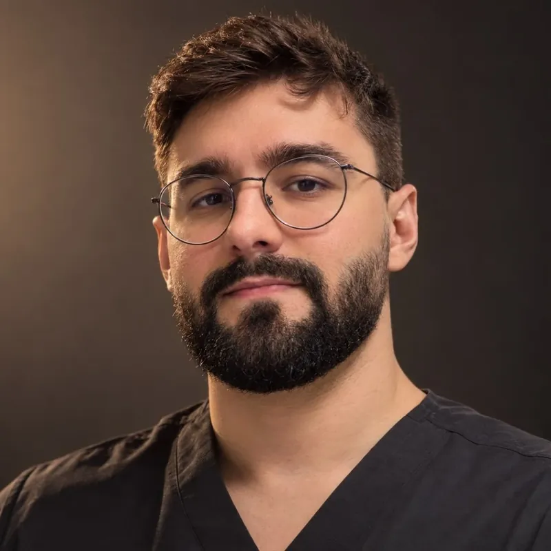
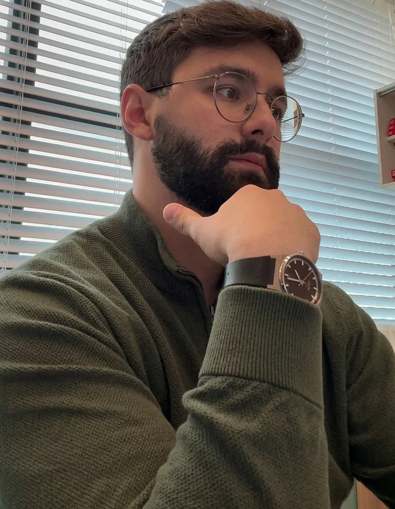

Diabetes e pré-diabetes
Diagnóstico, controle glicêmico e prevenção de complicações, com orientação prática para o dia a dia.
Dr. Victor Camillo oferece um acompanhamento endocrinológico próximo, individualizado e baseado em evidências científicas — para você entender o seu corpo e cuidar do seu metabolismo com segurança.


Sou o Dr. Victor Camillo, médico dedicado à Endocrinologia e Metabologia — a especialidade que cuida dos hormônios e de como eles influenciam energia, peso, sono, humor, fertilidade e a saúde a longo prazo.
Acredito em consultas sem pressa, com escuta atenta e explicações claras. Cada plano de tratamento é construído junto com o paciente, respeitando sua rotina, seus objetivos e sua história.
Da prevenção ao acompanhamento de condições crônicas, com atenção a cada detalhe do seu metabolismo.
Diagnóstico, controle glicêmico e prevenção de complicações, com orientação prática para o dia a dia.
Tratamento médico da obesidade com abordagem individualizada, focada em saúde e sustentabilidade.
Hipotireoidismo, hipertireoidismo, nódulos e tireoidites — avaliação e acompanhamento.
Alterações de hormônios sexuais, adrenais e hipofisários, incluindo SOP e menopausa.
Dislipidemias, resistência à insulina e síndrome metabólica, com foco em saúde cardiovascular.
Prevenção e tratamento da osteoporose e acompanhamento dos níveis de vitamina D e cálcio.
Uma medicina que une ciência, escuta e parceria — para decisões seguras sobre a sua saúde.
Cada paciente é único. A consulta considera sua história, seus hábitos e seus objetivos antes de qualquer conduta.
Atualização constante e condutas fundamentadas nas diretrizes científicas mais recentes, com segurança em primeiro lugar.
Explicações simples sobre exames e tratamentos, para que você participe ativamente das decisões sobre a sua saúde.
Entre em contato pelo WhatsApp ou formulário e escolha o melhor horário.
Escuta detalhada, exame físico e análise do seu histórico e exames anteriores.
Definição conjunta das metas e da conduta, com orientações claras.
Retornos periódicos para ajustes e monitoramento da sua evolução.
O Dr. Victor realmente escuta. Explica tudo com clareza e faz a gente se sentir acolhido em cada etapa do acompanhamento.
Profissional atencioso e cuidadoso. Nunca me senti apressado na consulta — dá para ver que ele se importa de verdade com os pacientes.
Depois de muito procurar, encontrei um médico que une conhecimento e empatia. Recomendo muito!
Não encontrou sua dúvida? Fale diretamente com a equipe pelo WhatsApp.
O endocrinologista cuida das glândulas e hormônios do corpo — como tireoide, pâncreas, adrenais e hipófise — e de condições metabólicas como diabetes, obesidade e colesterol alto.
Em casos de alterações de peso sem causa aparente, cansaço excessivo, glicemia ou colesterol alterados, alterações na tireoide, irregularidade menstrual, queda de cabelo ou sintomas relacionados à menopausa, entre outros.
Traga exames recentes (de preferência dos últimos 6 a 12 meses), a lista de medicamentos em uso e, se possível, laudos de exames de imagem anteriores.
Consulte a disponibilidade de teleconsulta diretamente com a equipe pelo WhatsApp.